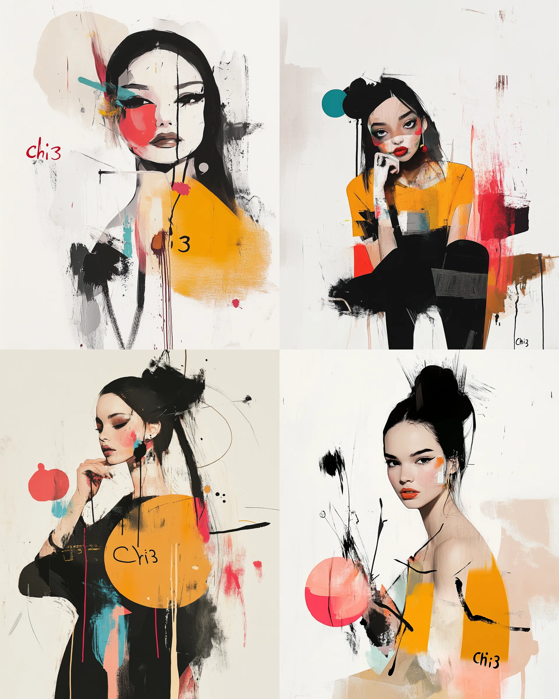
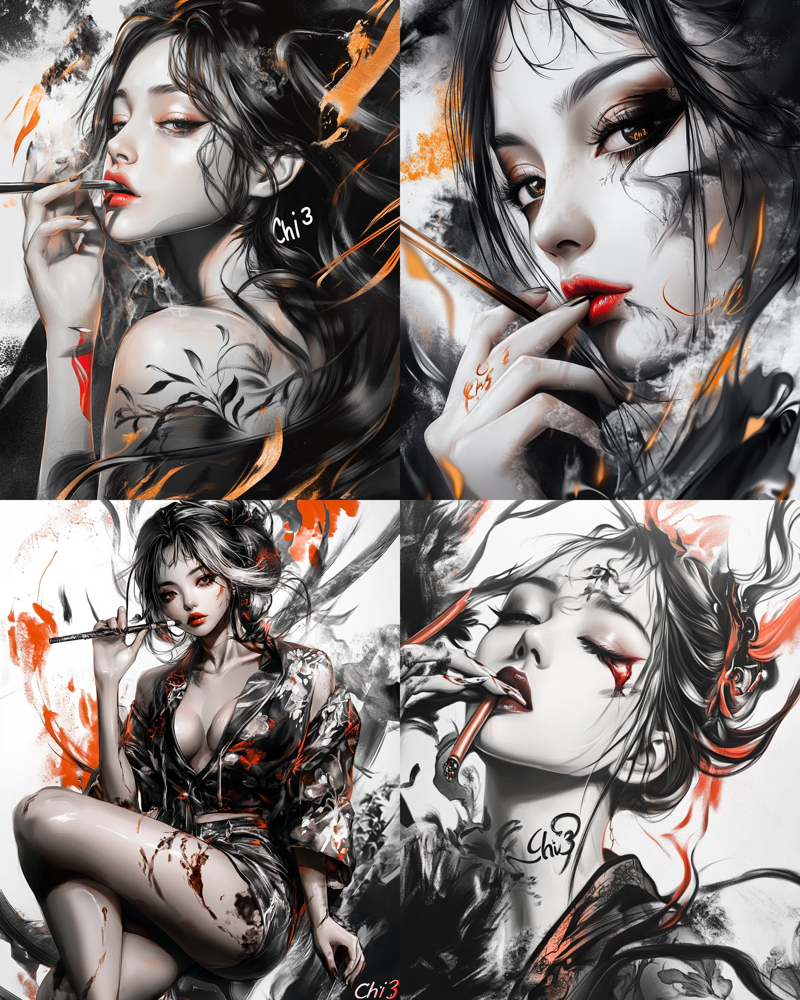
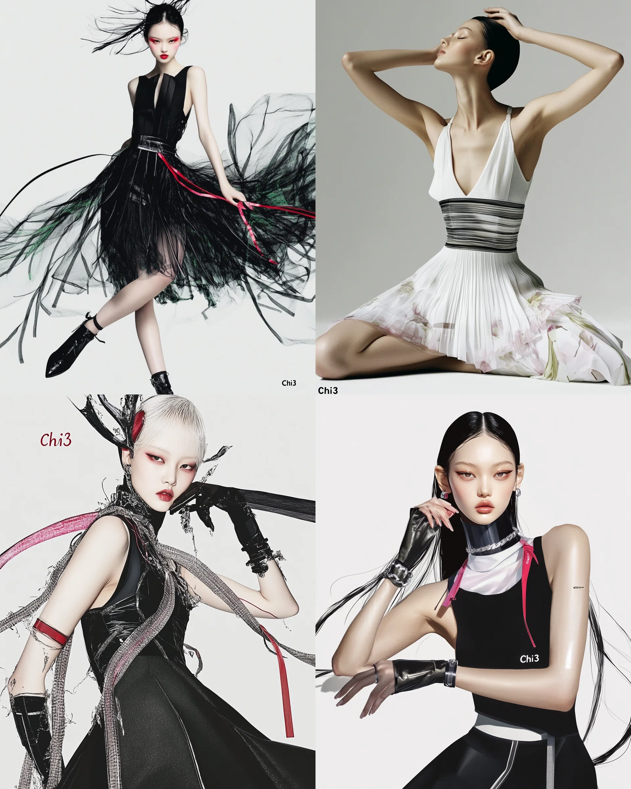
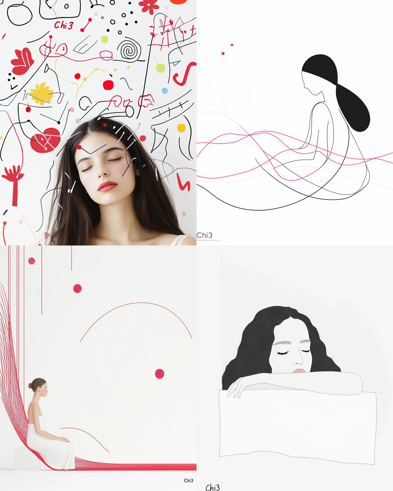
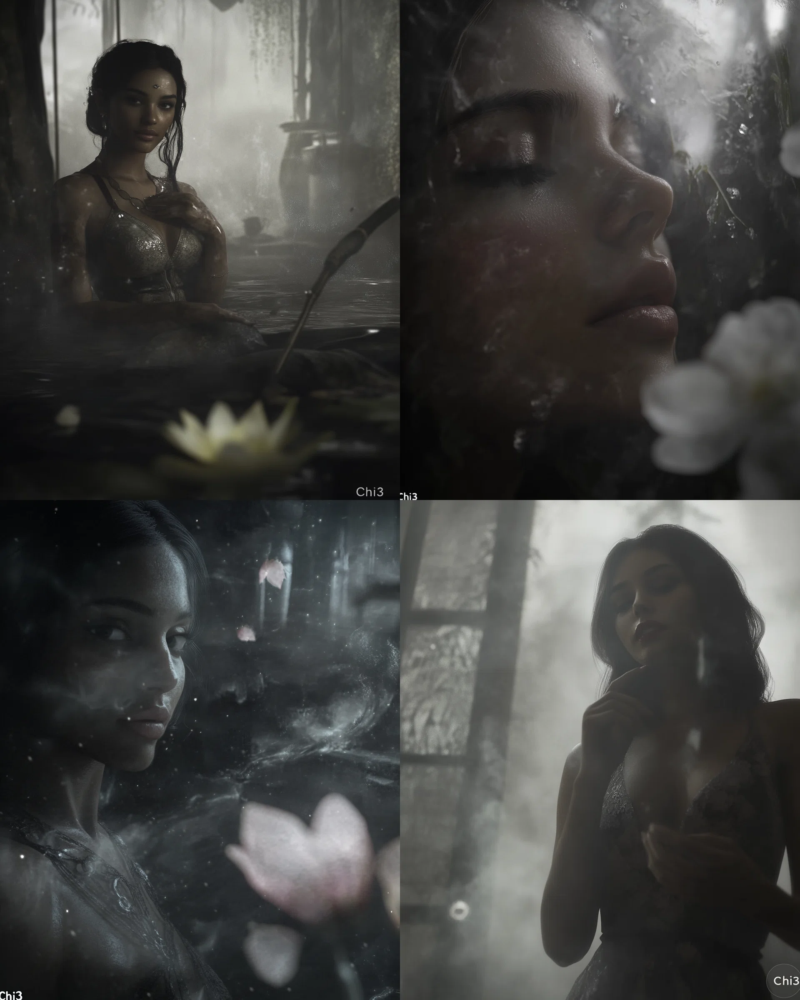
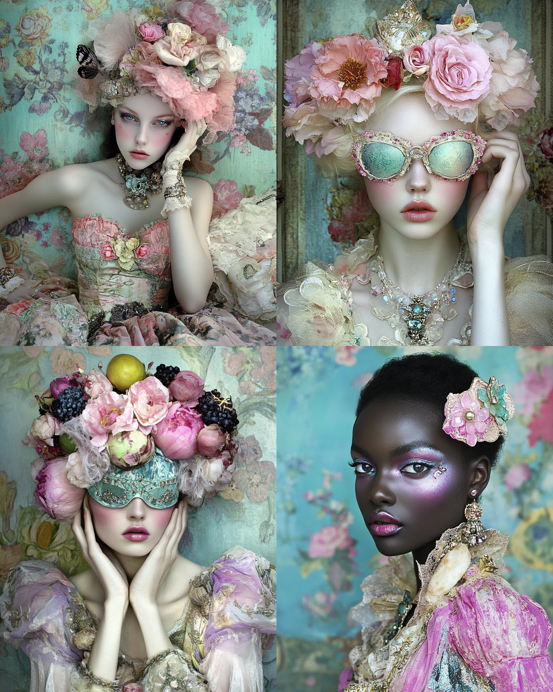
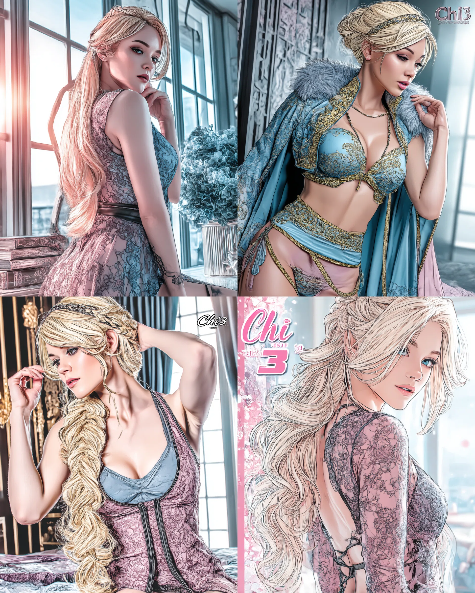

📜 ご利用にあたってのお願い
この特典コンテンツは メルマガ登録者さま限定 の非公開資料です。快適にご活用いただくため、下記のルールをお守りください。
-
個人利用の範囲内でご使用ください
SUZURI の販売や Midjourney の制作に役立てる目的であれば、作品づくり・勉強・検証など自由にお使いいただけます。 -
転載・再配布・二次販売は禁止です
本文・画像・コード・sref などを、そのまま／一部改変を問わず SNS・ブログ・動画・書籍・販売教材などへ公開することはできません。 -
チームや友人との共有もご遠慮ください
複数名でご利用になりたい場合は、各自でメルマガ登録をお願いします。 -
引用が必要な場合は事前にご相談ください
例外的に紹介やレビューをしたい場合は、必ず事前にご連絡ください。許可のない引用は全て転載扱いとなります。
著作権は発行者に帰属します。ルールをお守りいただけない場合、今後の配布を見送る場合がありますのでご了承ください。
🗨️ やりたいことが見えてくるAIとの対話プロンプト集
モヤモヤ・迷い・アイデア不足に効く3つの問いかけ。コピーしてAIチャットに貼り付けてお使いください。
① 気持ちがもやもやしているときに
「なぜ？」と聞かれると答えづらいときに。気持ちを押しつけず、引き出してくれます。
自分の気持ちがなんだかモヤモヤしています。
何に引っかかっているのか、うまく言葉にできません。
はっきり答えられなくてもいいので、私が答えやすいように、やさしく少しずつ質問してくれませんか？② やりたいことがぼんやりしているときに
モヤモヤの正体が見えてくると、気持ちに余白が生まれます。
今、自分が何に悩んでいるのか、何をしたいのかがぼんやりしています。
でも何かある気がしていて、整理できたら少しスッキリしそうです。
はっきり答えられなくてもいいので、やさしく問いかけてくれるとうれしいです。③ アイデアを出したいけど浮かばないときに
「何かやってみたいけど、思いつかない…」そんなときの起爆剤に。
何か作ってみたい気持ちはあるのですが、具体的なアイデアがまったくありません。
普段の生活や、小さなことでもいいので、思いつくきっかけになりそうな問いかけをしてもらえるとうれしいです。🎨 Midjourney作画用srefコード集
私のお気に入りのsrefコードです。
| srefコード | スタイル | サンプル画像 |
|---|---|---|
--sref 885817051
|
photoreal, black, edgy |  |
--sref 3456315280
|
 | |
--sref 1175434735
|
painterly, blonde, dreamy |  |
--sref 2496121206 --style raw --s 250
|
minimal, white, calm |

|
--sref 913825167
|
 | |
--sref 3408670632
|
 | |
--sref 3673065378
|
 | |
--sref 3205753551 --v 7.0
|
 | |
--s 250 --sref 3205753551 --v 7.0
|

|
|
--sref 3781080376 --s 250 --v 7.0
|

|
|
--sref 590010424445
NEW
|
graphic, orange, bold |
👕 SUZURI 2025年春：売れるデザイン＆企画ガイド
公式アナウンスと直近セール情報をベースに、これから作品を作る方向けにまとめました。
1. 今すぐ狙うべきアイテム
-
ビッグシルエットT / ヘビーウェイトT
11周年BIGセールで最大 1,000 円引き。主力カテゴリなので販売量が多い。
参考リンク -
刺しゅうフリースジャケット
2025/3/5 登場の新定番。ミニロゴ・1〜2色刺しゅうが推奨。
参考リンク -
ステッカー／缶バッジ
低単価＆100 円引き枠でまとめ買いされやすい。 -
定型アクリルキーホルダー
iOS アプリで“スマホ完結”デザインが可能。
参考リンク
2. デザイン構成のコツ
- ワンポイント × 2色以内 — コストを抑えつつ高見え。
- 1モチーフ + 短コピー — スマホのサムネで瞬時に伝わる。
- 低単価 → 高単価の階段設計 — ステッカー → アクキー → T シャツ → ジャケット。
3. 企画例
-
梅雨入り（6 月）
モチーフ：カエル × レインコート
配色：ミント & パープルグレー
展開：ステッカー → ドライＴシャツ -
レトロ喫茶ブーム
モチーフ：ゆる動物 × クリームソーダ
配色：ソーダグリーン & 赤チェリー
展開：胸ワンポイント刺しゅうＴ + 背面ビッグプリントＴ -
旅行・インバウンド
モチーフ：ミニロボ × ご当地名物
展開：アクキー 6 色セット → ビッグＴ → トート
4. 制作チェックリスト
- ロゴ／線画を 太線 1 色 で 5 種作成（刺しゅう対応）
- アクキーを 色替え 6 パターン 量産（iOS アプリで 10 分）
- ステッカーを 背景透過 PNG + 白フチ で書き出し
- セール前日に SNS で値引き告知
- VRChat や 3D 派生商品の可能性を検討
5. 投稿用ハッシュタグ例
まとめ
セール対象＝売れ筋 と心得て優先的に制作。ワンポイント × 質感 で差別化し、原価を抑えて高見えを狙う。低単価でファンを呼び込み、高単価で利益を回収 する階段戦略が王道。まずは「刺しゅうロゴＴ」と「定型アクキー」のセットから始めてみましょう！
✨【2025/07/24更新】Chrome拡張機能「SideTray」
ブラウザに、ブックマークとは別に一時保存できる拡張機能です。
詳しい開発背景はこちらの記事で、昨日（7/24）のアップデート内容はこちらの記事で詳しく解説しています。ぜひ合わせてご覧ください。
主な機能
- ドラッグ可能なフローティングアイコン: 画面の右上に小さなアイコンが表示され、好きな場所にドラッグ＆ドロップで移動できます。位置は記憶されます。
- クリックでサイドバー表示: アイコンをクリックすると、保存したページやテキストの一覧がサイドバーに表示されます。Escキーやサイドバーの外側をクリックすれば非表示にできます。
-
ページ全体の簡単保存:
Altキーを押しながらアイコンにマウスを近づけるか、クリックするだけで、現在開いているページを保存します。 - 選択テキストのハイライト保存: 保存したいテキストを選択した状態でページを保存すると、その部分だけをハイライトとして保存できます。「後で読みたい」一文やキーワードの記録に便利です。
- シンプルで直感的な管理: 保存した項目をクリックすれば元のページに移動し、不要なものは簡単に削除できます。
拡張機能のインストール方法
- 上のボタンからzipファイルをダウンロードし、解凍します。
-
Chromeブラウザで、アドレスバーに
chrome://extensionsと入力して拡張機能管理ページを開きます。 - ページの右上にある「デベロッパーモード」のスイッチをオンにします。
- 左上に表示される「パッケージ化されていない拡張機能を読み込む」ボタンをクリックします。
- 先ほど解凍したフォルダを選択すると、インストールが完了します。
🖼️【2025/07/24追加】Midjourney一括ダウンロードChrome拡張機能
Midjourneyで生成した画像を、まとめて簡単にダウンロードできるChrome拡張機能です。作業効率を大幅にアップさせます。
主な機能
- 一括ダウンロード: Midjourneyのギャラリーページから、表示されている画像や動画をまとめてダウンロードできます。
- シンプルな操作性: ダウンロードしたい画像や動画を選択し、ワンクリックでダウンロードが開始されます。